01 — KCC / AUTHORITY
Not every tool should execute.
The model proposes a tool call. A task-scoped capsule and host guard determine if it can reach the dispatcher.

Proof: one authorized read reaches the host callback; five denied or approval-required conditions do not. This is an in-process SDK demonstration, not a production penetration test.